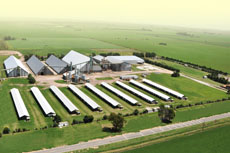
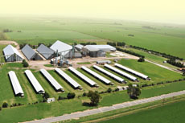

Ruta A 171
Tel/Fax +54 0358 498 0514 / 444
(2686) Alejandro Roca
Provincia de Córdoba, Argentina
info@goldenargentina.com

- Historia y Presente
- Misión y Principios
- Sistema de Gestión
- RSE, Políticas de Responsabilidad Social Empresaria
 

Historia y presente
La empresa comenzó a principios de los años 90, siendo denominada en esa época como Cargill, e incursionó en el sector manisero con la siembra de maní, dando origen a la Operación Maní de Cargill Argentina. Luego importó cosechadoras a granel, sistemas de secado americano y semillas para la siembra.
En 1994 construye su planta de Secado y Almacenaje en la localidad de Alejandro Roca, en la Provincia de Córdoba.
Desde 1994 a 1996 se sucedieron 3 años donde Operación Maní seleccionó maní en plantas de terceros y exportó a distintos destinos.
En Abril de 1997 inaugura su Planta de Selección en el mismo predio de Alejandro Roca, conformando así un complejo manisero modelo.
La nueva planta está dotada de tecnología de última generación y operada por personal entrenado localmente y en el exterior.
La velocidad con que suceden los cambios en el mundo de los negocios, constantes fusiones de empresas y la necesidad de mantener el liderazgo alcanzado, llevo a que tanto Cargill como Golden Peanut de EEUU decidieran fusionarse para operar en la industria manicera de EEUU y Argentina a partir de Julio de 2000.
Golden Peanut, hasta ese momento una empresa cuyos dueños eran Gold Kist, ADM y Alimenta, incrementa su capital mediante la incorporación de las instalaciones de Cargill en EEUU y en Argentina y sus dueños pasan a ser cuatro, ya que se agrega Cargill, teniendo cada uno de ellos el 25% del capital. Con esta operación Golden Peanut se inicia como empresa multinacional.
La absorción del negocio en Argentina implica la continuidad de todo el personal, el mantenimiento de las políticas y normas éticas vigentes y afianza la posibilidad de crecimiento. Implica también el mantenimiento del sistema de aseguramiento de la calidad siguiendo los requisitos de la Norma ISO 9001.
A principios de 2011, ADM se constituye como único dueño de Golden Peanut Company.